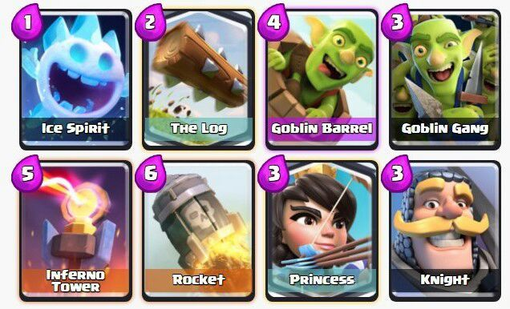

Logbait is a deck build with the sole purpose of tricking your oponent into using there area damge card, then alowing you to overrun them with swarm units in the oposite lane. The reson that the deck is called logbait is that the log is the card ussualy used to stop swarm units. When they use the log, they must either overdefened the swarm units or lose a big chunk of healf from their crown towers.
